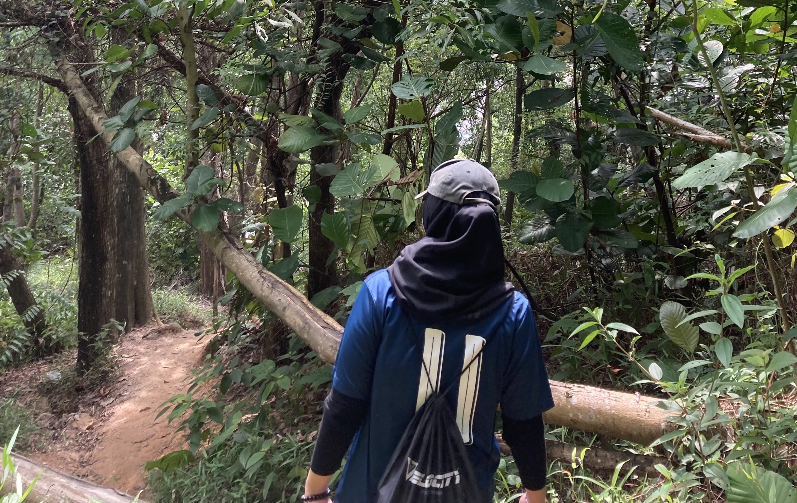
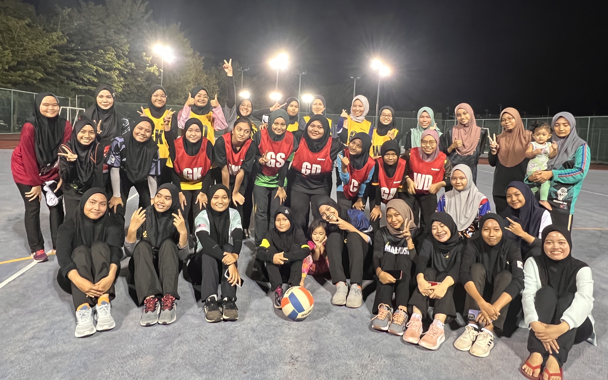

MY HOBBY
Playing sports.


"I am very skilled in sports because when I was in primary school, I have joined 'Merentas Desa'. Then, when I was in secondary school, I also presented in MSSWP netball for my school. At first, I am not good at playing netball but as my ability a quick learner just by watching people play netball I can master it too."
Playing sports.
1 / 5

Hiking
2 / 5

Netball
3 / 5
Netball
3 / 5
Netball
3 / 5
Badminton